Lisandro Hernández de la Peña
Associate Professor of Chemistry
Department of Natural Sciences
Kettering University
lhernand@kettering.edu
Research interests
Theoretical chemical physics, statistical mechanics, condensed matter theory,
molecular dynamics, Monte Carlo method, coarse-grain modeling, quantum dynamics,
semi-classical theory, path integral methods, spectroscopy, open quantum systems,
non-equilibrium statistical mechanics, quantum computing and algorithms.
Teaching
CHEM 137. Principles of Chemistry
CHEM 237 General Chemistry
CHEM 361. Physical Chemistry I
CHEM 363. Physical Chemistry II
CHEM 492. Topics in Physical Chemistry
CHEM/EP 391. Introduction to Nuclear Sciences
CHEM 437. Inorganic Chemistry
PHYS 363. Thermodynamics and Statistical Physics
PHYS 491. Advanced Quantum Mechanics
CHME 210. Chemical Enginering Thermodynamics
Projects
Selected Publications
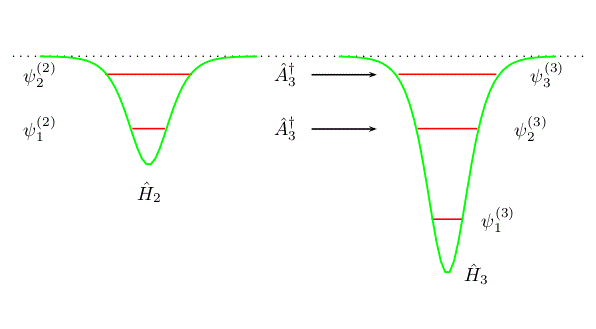
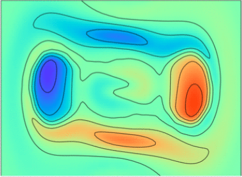
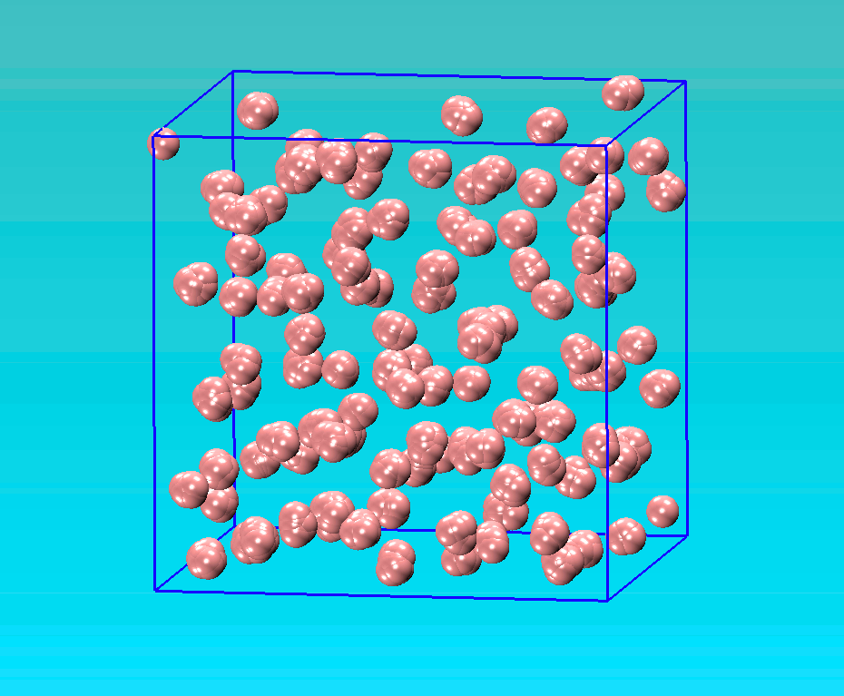
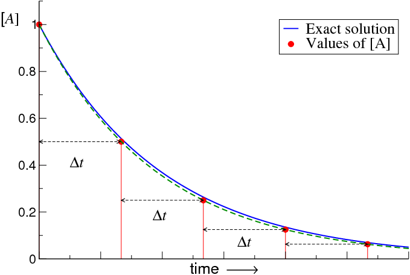
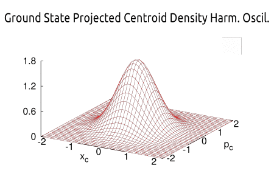
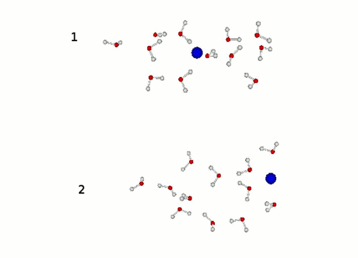
Quantum free energy differences from non-equilibrium path-integrals: II. Convergence properties for the harmonic oscillator
R. van Zon, L. Hernández de la Peña, G. H. Peslherbe and J. Schofield, Phys. Rev. E 78, 041104 (2008)
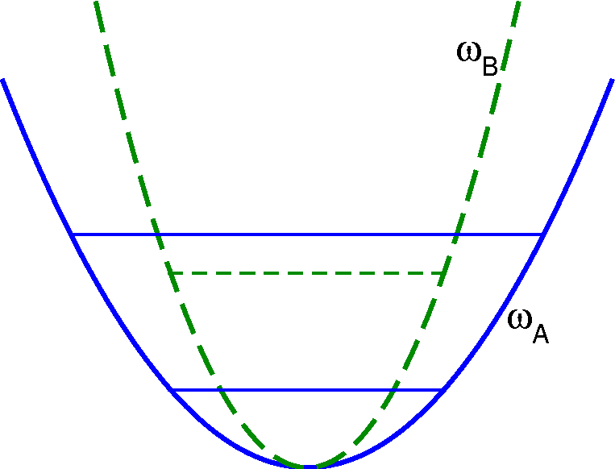
Quantum free energy differences from non-equilibrium path-integrals: I. Methods and numerical application
R. van Zon, L. Hernández de la Peña, G. H. Peslherbe and J. Schofield, Phys. Rev. E 78, 041103 (2008)
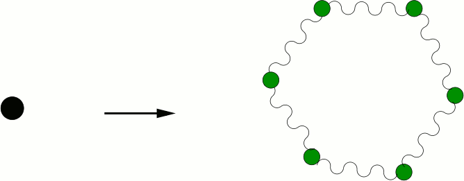
Discontinuous molecular dynamics for rigid bodies: Applications
L. Hernández de la Peña, R. van Zon, J. Schofield and S. B. Opps, J. Chem. Phys. 126, 074106 (2007)
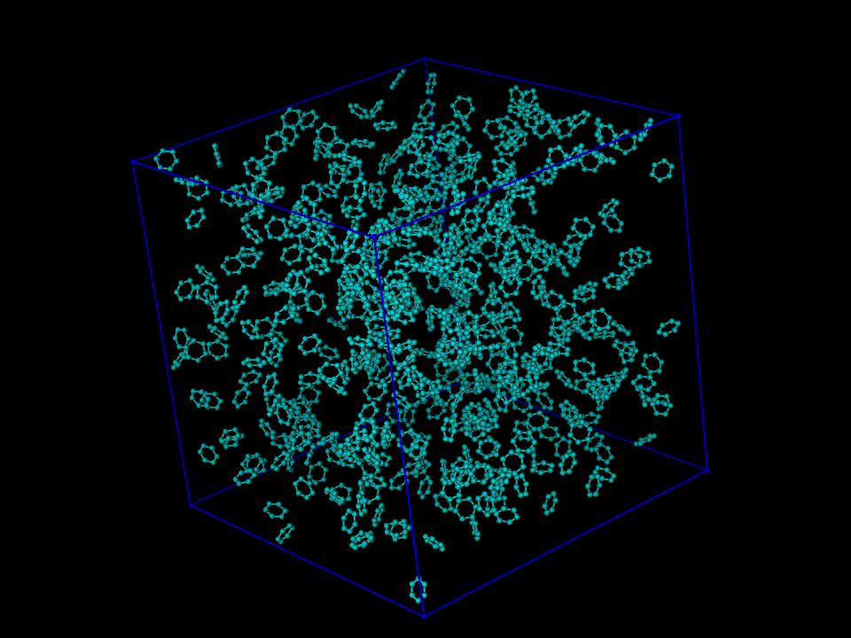
Discontinuous molecular dynamics for semi-flexible and rigid bodies
L. Hernández de la Peña, R. van Zon, J. Schofield and S. B. Opps, J. Chem. Phys. 126, 074105 (2007)
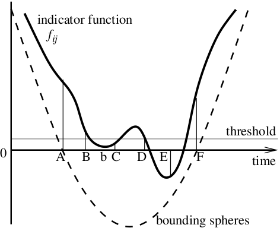
Quantum effects in liquid water and ice: Model dependence
L. Hernández de la Peña and P. G. Kusalik, J. Chem. Phys. 125, 054512 (2006)
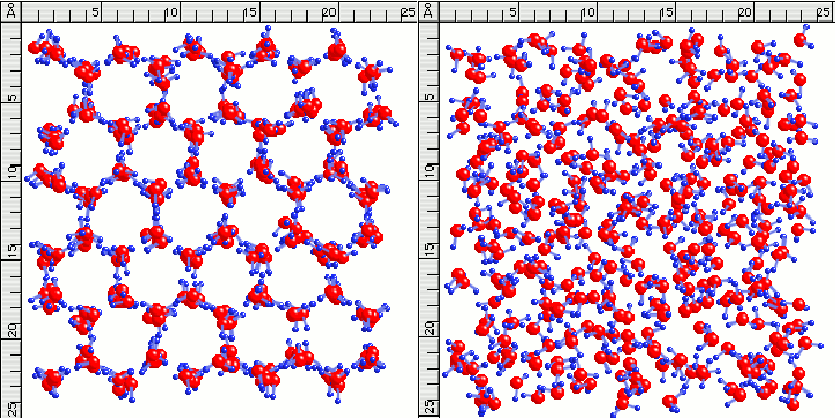
Quantum effects in ice Ih
L. Hernández de la Peña, M. S. Gulam Razul and P. G. Kusalik, J. Chem. Phys. 123, 144506 (2005)
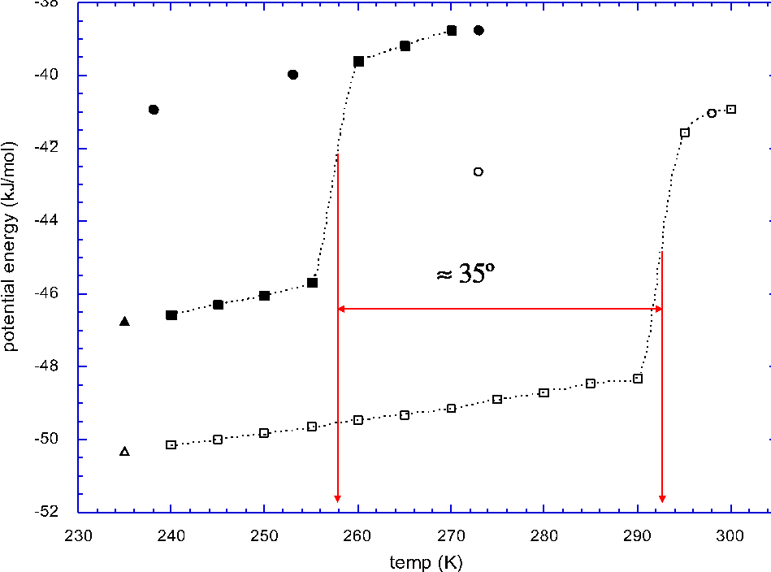
Effects of quantization on the properties of liquid water
L. Hernández de la Peña, M. S. Gulam Razul and P. G. Kusalik, J. Phys. Chem. A 109, 7236-7241 (2005)
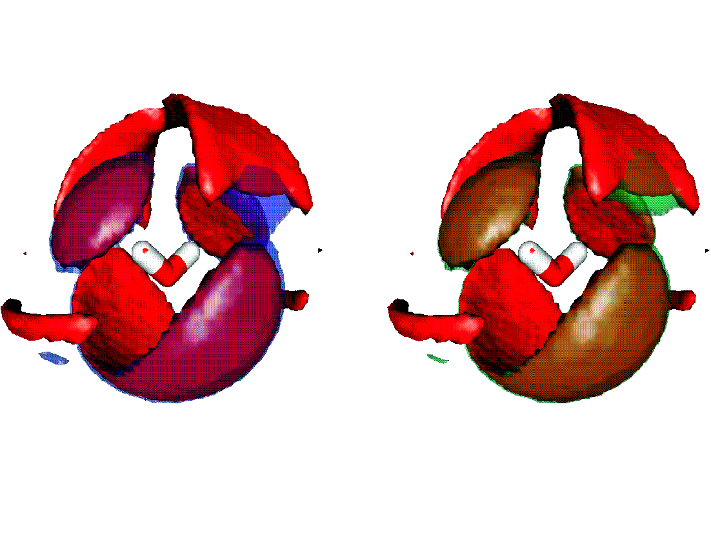
Temperature dependence of quantum effects in liquid water
L. Hernández de la Peña and P. G. Kusalik, J. Am. Chem. Soc. 127, 5246-5251 (2005)
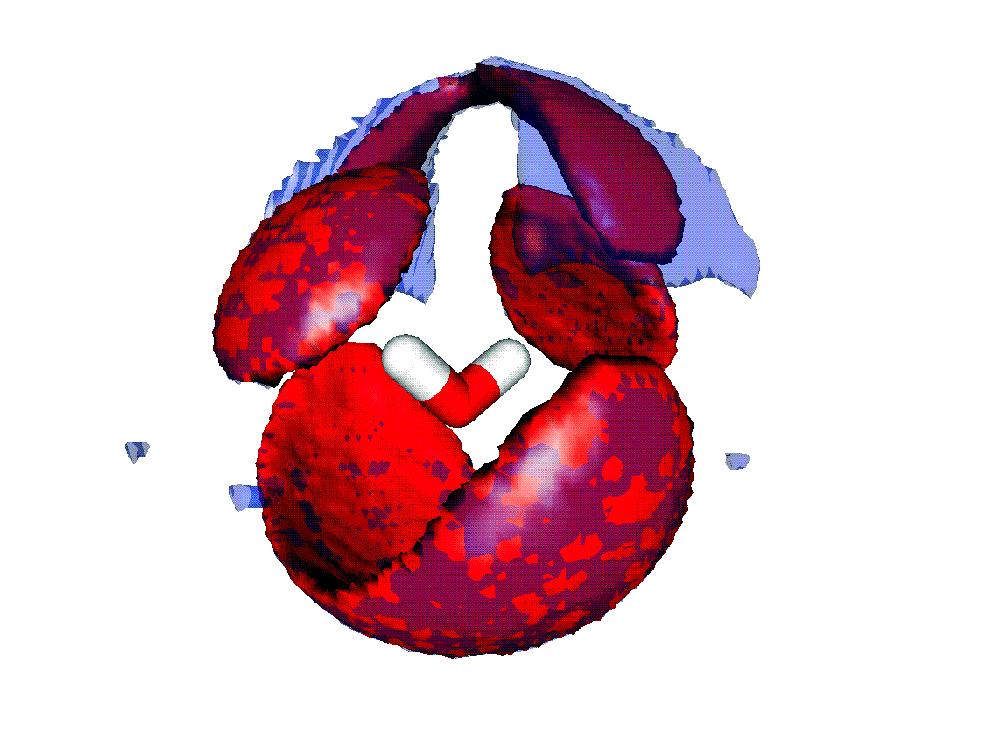
Quantum effects in light and heavy liquid water: A rigid body centroid molecular dynamics study
L. Hernández de la Peña and P. G. Kusalik, J. Chem. Phys. 121, 5992-6002 (2004)
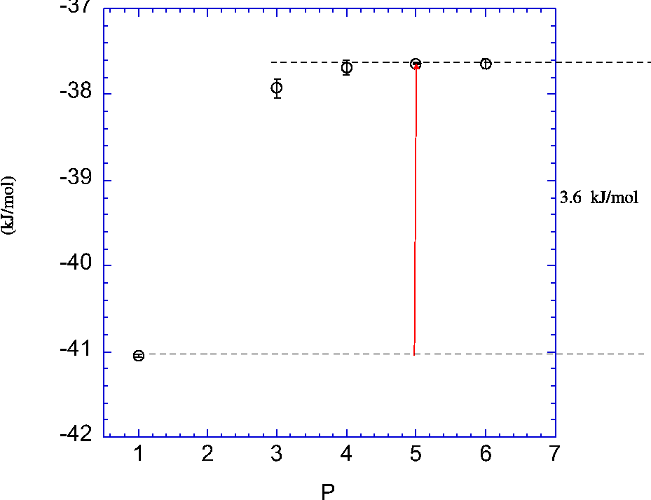
The rotational centroid and its application in quantum molecular dynamics simulations
L. Hernández de la Peña and P. G. Kusalik, Mol. Phys. 102, 927-938 (2004)
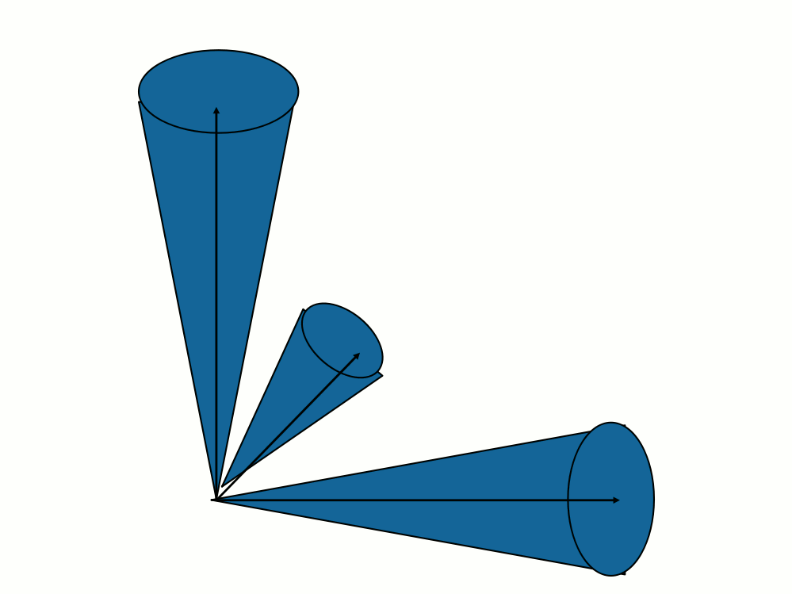
Molecular Movies